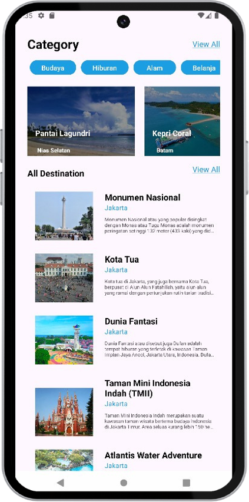

📋 About the Project
This project is a cross-learning path collaboration from Bangkit Academy 2024, involving participants from Cloud Computing, Machine Learning, and Mobile Development. The program is supported by Google, Gojek, Tokopedia, and Traveloka. We developed an Android application that provides personalized travel recommendations based on user preferences, powered by Google Cloud and machine learning technologies.
I was responsible for backend development using Google Cloud infrastructure, particularly Compute Engine and Cloud SQL to run the application and manage the database. I also conducted API testing using Postman and contributed to writing the final project documentation.
🔧 Technologies Used
-
 Google Cloud
Google Cloud
-
 Postman
Postman
-
 Python
Python
-
 Kaggle
Kaggle
🖼️ Application
